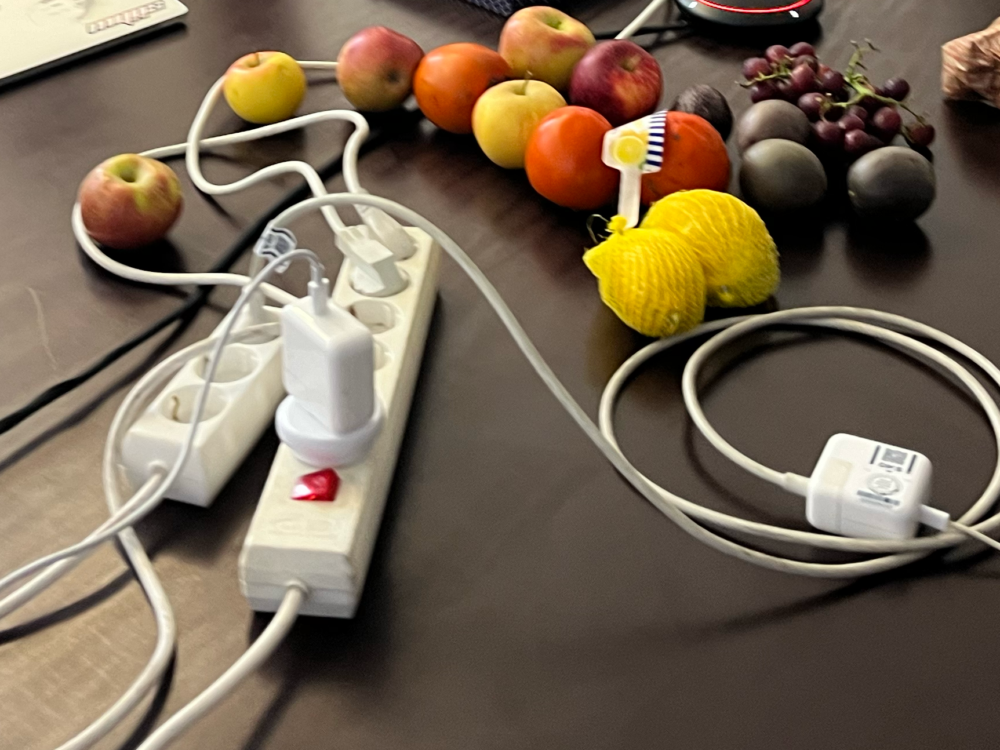

Fruitful Web
We wanted to archive our original "Fruitful" section of our website here for future reference. We still believe in these tenants, but are simply moving things around, for our new season ...
Well... what is a fruitful web?
A fruitful web requires seeds. We ask participants to apply with a proposal of their seed, their idea, their content to publish.
A fruitful web requires soil. Good soil is a point of view, specific perspective, or story. Prior coding experience is a plus, but it’s not required.
A fruitful web is handmade. By learning some basic HTML, we will build a website by hand. (+)(–)
“In today’s highly commercialized web of multinational corporations, proprietary applications, read-only devices, search algorithms, Content Management Systems, WYSIWYG editors, and digital publishers, it becomes an increasingly radical act to hand-code and self-publish experimental web art and writing projects.â€
— J.R. Carpenter
A fruitful web studies the histories and materiality of the web to understand “the web’s grain†and often works along with it. (+)(–)
“I believe every material has a grain, including the web. But this assumption flies in the face of our expectations for technology. Too often, the internet is cast as a wide-open, infinitely malleable material.â€
— Frank Chimero
A fruitful web is visually diverse. We like seeing things we've never seen before. We will learn how to add a presentation layer to our content with CSS.
A fruitful web flows and changes over time. We will learn basic JavaScript to seek generative opportunities.
A fruitful web aspires to be light, fast, and accessible. We will use only as much energy as we need to. We recognize websites are connected to limited physical resources.
(+)(–)
“Just because things are digital doesn’t mean they’re more sustainable. There are servers that are powered by fossil fuels that serve up these digital documents.â€
— Marie Otsuka speaking on the design of the solar-powered version of the Low Tech Magazine website
A fruitful web can be written. Maybe you can build a text-only website.
(+)(–)
“There is a renaissance underway in online text as a medium.â€
— Venkatesh Rao
A fruitful web can be a utility. Perhaps we can make tools for our daily lives.
A fruitful web can be performative. Maybe we can make sites with a purpose and life that’s brief but beautiful. We also recognize that the web is inherently a performative medium by its design.
(+)(–)
“Like theater, CSS is contextual. As a playwright, I know the actors are going to say the lines I wrote in the order I wrote them in the script. But when I write stage direction (like how I think the stage and actors should look and behave), they’re all suggestions. The production company will make their own decisions because they’re working with specific constraints.â€
— Miriam Suzanne
A fruitful web can be archival. Perhaps we plant the seed and let it grow, let it collect.
